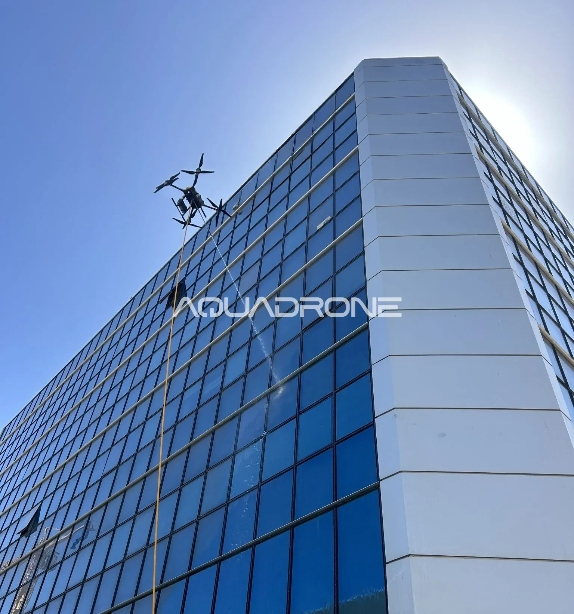

13/06/26
ניקוי חזיתות בתל אביב
ניקוי חזיתות בתל אביב וגוש דן באמצעות רחפן הוא אחד השירותים המרכזיים של Aquadrone באזור המרכז. שירותי ניקוי המבנים המסחריים שלנו מכסים את כל אזור גוש דן – תל אביב, רמת גן, גבעתיים, בני ברק, פתח תקווה, הרצליה ורמת השרון – ומספקים פתרון מקצועי לניקוי חזיתות, חלונות וקירות מסך ללא פיגומים וללא סנפלינג. בהתאם לתקנות עיריית תל אביב, כל פעולותינו מבוצעות תוך שמירה מלאה על תקנות הבטיחות והסביבה.
תל אביב וגוש דן הן האזורים הצפופים ביותר בישראל, עם ריכוז גבוה של מגדלי משרדים, מלונות, מרכזי קניות ובניינים מסחריים. בסביבה עירונית צפופה כזו, הלכלוך, הפיח וזיהום האוויר מצטברים במהירות על חזיתות המבנים וחלונותיהם – ודורשים ניקוי תקופתי מקצועי.
האתגרים הייחודיים של ניקוי חזיתות בסביבה עירונית
ניקוי חזיתות בתל אביב וגוש דן מציב אתגרים ייחודיים שאינם קיימים באזורים אחרים. הצפיפות העירונית מקשה על הקמת פיגומים וחסימת שטחים ציבוריים. תנועת הולכי הרגל והרכבים הרבה מגבילה את האפשרות לעבוד בשיטות מסורתיות. רמת הזיהום הגבוהה בעיר גורמת לחזיתות להתלכלך מהר יותר מאשר באזורים כפריים. לבסוף, בעלי הנכסים בתל אביב דורשים תוצאות מהירות עם מינימום הפרעה לפעילות העסקית.
מדוע רחפן הוא הפתרון האידיאלי לתל אביב וגוש דן?
ניקוי חזיתות בתל אביב באמצעות רחפן מתאים במיוחד לסביבה העירונית הצפופה. הרחפן אינו דורש חסימת שטחים ציבוריים, עובד בשקט יחסי ללא הפרעה לסביבה, מגיע לכל נקודה בחזית גם במקומות צרים ומורכבים, ומשלים את הניקוי בזמן קצר ביותר. כל אלה הופכים את הניקוי הרחפני לפתרון המושלם לאזור תל אביב וגוש דן.
אזורי הפעילות שלנו בגוש דן
Aquadrone מספקת שירותי ניקוי חזיתות וחלונות לכל אזור גוש דן. אנו פעילים בתל אביב יפו, רמת גן, גבעתיים, בני ברק, פתח תקווה, הרצליה, רמת השרון, כפר סבא, נתניה וכל יישובי המרכז. צוות הטייסים המוסמכים שלנו מגיע לכל מקום באזור המרכז עם ציוד מלא ומוכן לפעולה.
שירות הניקוי הרחפני של Aquadrone גמיש ומותאם לצרכי הלקוח – אנו עובדים בימים ובשעות המתאימים לפעילות המבנה ולוח הזמנים של הדיירים, כדי להבטיח מינימום הפרעה לשגרה השוטפת.
לפרטים נוספים ולקבלת הצעת מחיר לניקוי חזיתות באזורכם בקרו בעמוד צרו קשר, ולמידע נוסף על אזור גוש דן קראו עוד כאן.